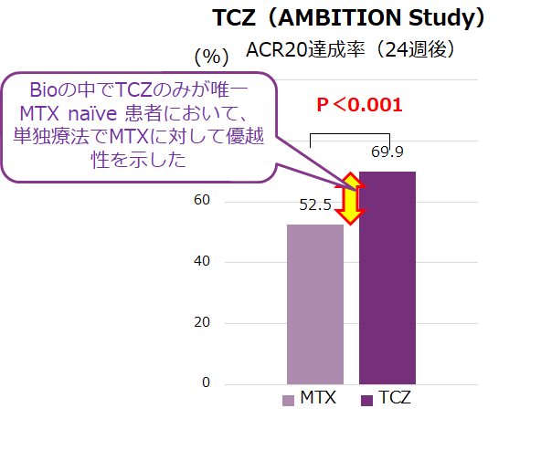
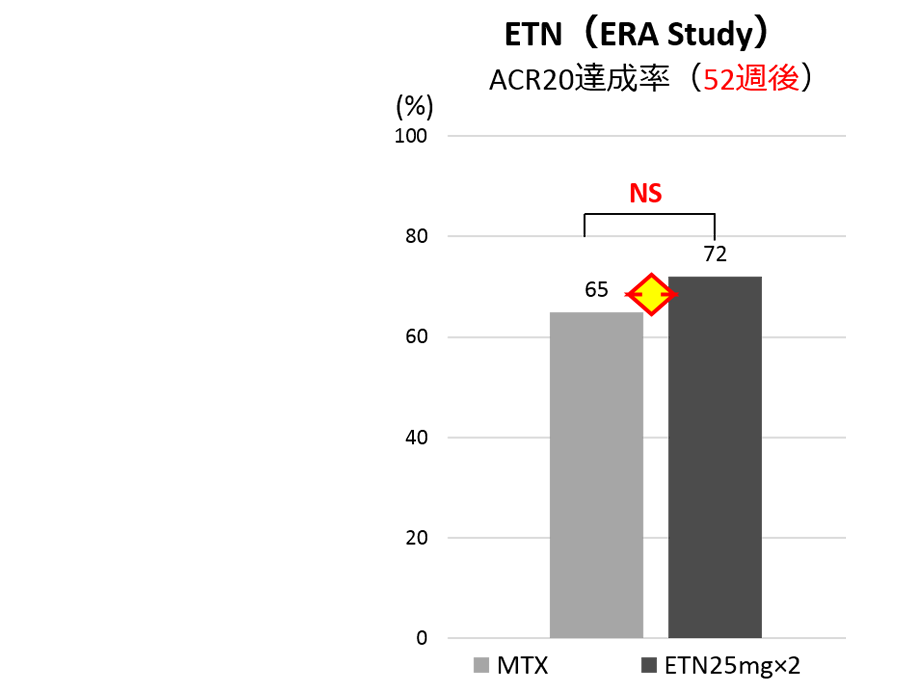

エンブレルMonoはMTXと有意差がない
TCZとETN単独療法のMTXへの優越性の検討
MTX naïve RA患者に対するMTXと生物学的製剤単独療法の有効性比較

Jones G, et al. Ann Rheum Dis 2010;69:88–96.

Bathon JM, et al. NEJM. 2000 Nov 30;343(22):1586.
注：JAK阻害薬のトファチニブ、バリシチニブは単剤でMTXより優れるデータあり
TCZとETN単独療法のMTXへの優越性の検討
Jones G, et al. Ann Rheum Dis 2010;69:88–96.
Bathon JM, et al. NEJM. 2000 Nov 30;343(22):1586.
注：JAK阻害薬のトファチニブ、バリシチニブは単剤でMTXより優れるデータあり